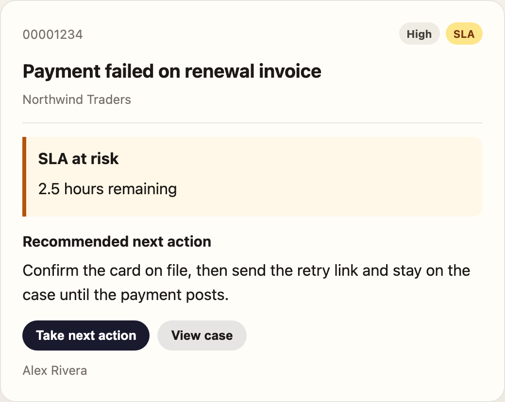
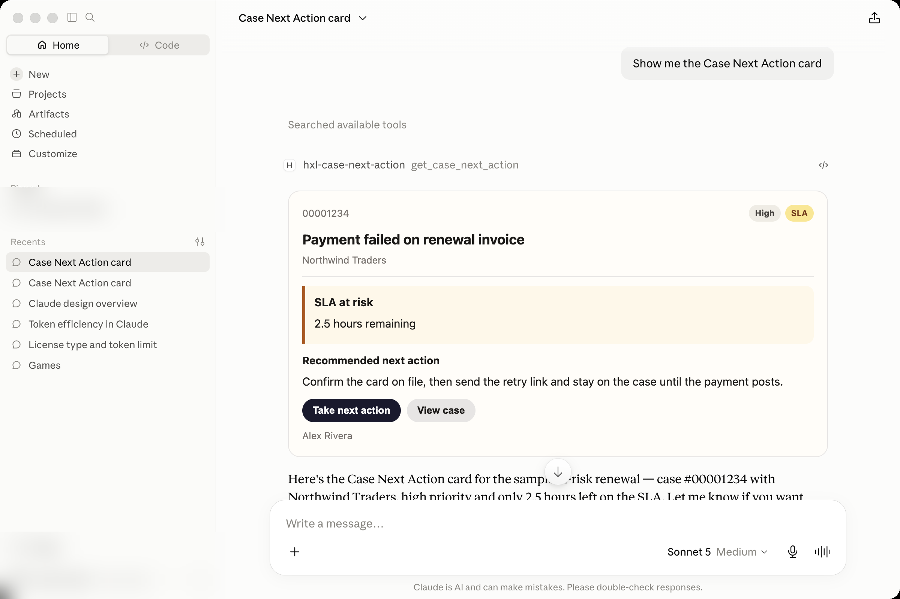

Define the interface once. Render it anywhere.
Salesforce Headless Experience Layer is the control plane for how an agent shows up — Slack, ChatGPT, Claude, Agentforce, or any MCP host — without rewriting the UI for each surface.
The idea
Enterprise apps used to be rigid: built once, for one device. Agents made that worse. A case summary that looks right in Lightning is a pile of markdown in Slack, a JSON blob in ChatGPT, and a custom Block Kit job for whoever drew the short straw. The Headless Experience Layer (HXL) splits what the agent should show from how the host paints it.
Salesforce’s own framing is three claims:
- Build once — pricing rules, validation, and next-best-action stay in one definition. No porting the same card to five UI kits.
- Deploy everywhere — a translation layer turns that definition into Slack Block Kit, a mobile screen, Lightning, or a structured response for ChatGPT / Claude / any MCP host.
- Automate governance — the experience is still a Salesforce surface. Permissions, sharing, and audit trails travel with it. The external client is not a security outlier.
HXL is the control plane for how AI shows up. It is built on Custom Lightning Types and a multichannel UI framework, so the same agent response can adapt natively across LEX, mobile, Slack, Teams, ChatGPT, and first- or third-party surfaces.
How the playground is built
The product page’s “Explore the Playground” link is not a marketing mock. It is a live Mosaic runtime. The tutorials are the documentation and the proof: each lesson is itself a widget. Expand the code view on any step and you are looking at the same JSON the host will render.
| Word | Meaning |
|---|---|
| Component | A primitive — the smallest renderable unit (tile/text, tile/button, tile/card). |
| Widget | A surface-agnostic composition of components. One page that is meant to work everywhere. |
| Mosaic | The declarative JSON format. Type = Model, Widget = View, Action = Controller. |
The runtime exposes a small palette — 36 tile/* blocks at the time of writing — and tags each one with the channels it already knows: a2ui, lwc, react, and for most of them slack. Accordion, modal, tabs, and table are still web-first. Button, card, badge, callout, list, and text already speak Slack.
That is the whole trick. You do not design a Slack UI and a Claude UI. You pick semantic variants — primary, warning, elevated — and let the host map them. The playground is explicit: style intent, not pixels.
Mosaic JSON
A playground widget is a tree. Root is type: mosaic / definition: tile/mosaic. Children are blocks. Data arrives through dataProviders. Bindings use {!$var.path}. Conditionals and lists use meta.if and meta.forEach.
{
"definition": "tile/text",
"attributes": {
"text": "Hello, Widget!",
"variant": "h1"
}
}
That is the Hello World tutorial, verbatim. Everything else in the playground — shopping cart, conditional admin banners, product-card mosaics — is the same tree with more children and a data provider.
A Salesforce org wraps the same tree in a WidgetBundle so the platform can type-check it:
| Playground Mosaic | Org WidgetBundle | |
|---|---|---|
| Envelope | type: mosaic | type: lightning__agentforceWidget |
| Root block | tile/mosaic | tile/widget |
| Bindings | {!$case.subject} | {!$attrs.subject} |
| Contract | inline dataProviders | schema.json + .uiwidget-meta.xml |
One component: Case Next Action
The playground already ships agent-action mosaics in this shape — case summary, SLA status, similar cases, rebooking options. The sample in this repo is the one agents actually need on a busy queue: what is the case, is the SLA burning, what should I do next.
Screenshot and demo

meta.if.
The card is one tile/card. A row of badges for priority and SLA. A warning tile/callout gated by meta.if on slaAtRisk. One primary button. Semantic variants only — no hex colors, no pixel widths.
{
"definition": "tile/callout",
"meta": { "if": "{!$case.slaAtRisk}" },
"attributes": { "variant": "warning", "title": "SLA at risk" },
"children": [
{ "definition": "tile/text", "attributes": { "text": "{!$case.slaHoursLeft}" } }
]
}
When slaAtRisk is false, the callout is not hidden with CSS. It is not in the tree. That is the point of a declarative host: each surface can omit, collapse, or announce the block in its own way.
Paste mosaics/case-next-action.json into the playground. Deploy force-app/main/default/uiWidgets/caseNextAction/ only when you mean to put it in an org — three files, co-located, widgetType: JSON.
Trust travels with it
Without a control plane, every new channel reimplements security, data, and UI. Salesforce calls that context dilution and logic fragmentation. HXL’s answer is boring on purpose: the widget is still metadata. Field-level security, sharing, and audit are not a sidecar you bolt onto ChatGPT. They are the same rules the case already had in the CRM.
That is why “headless” here does not mean “unauthenticated JSON on the public internet.” It means the presentation is headless. The brain stays in the platform.
Try it
- Open Explore the Playground and expand any tutorial’s code view. You are reading Mosaic.
- Paste
mosaics/case-next-action.jsonand switch hosts. - Compare the org envelope in
force-app/main/default/uiWidgets/caseNextAction/. - Source and license: the GitHub repo this post ships in.
HXL is included with the Agentforce 360 platform license — no extra per-user fee to orchestrate licensed Salesforce surfaces. The playground, the Mosaic format, and the WidgetBundle skill are how you actually author against it.